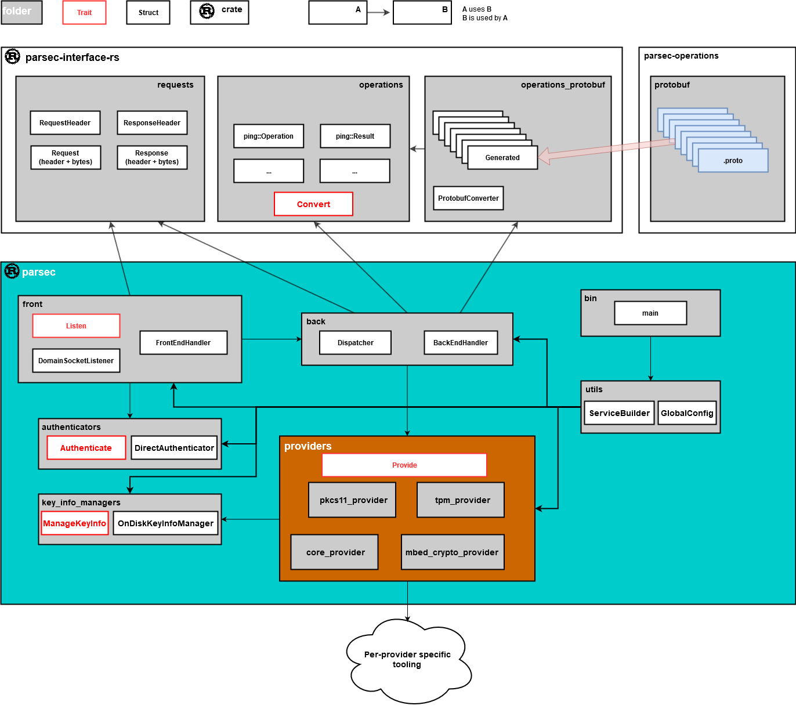

Source Code Structure
Introduction
This document presents the overall organisation of the source code repository, and provides pointers to key definitions and implementations.
Audience
An understanding of the source code repository structure is essential for developers who are contributing functionality to the service or any of its client libraries.
Overview
This project is a client-server system. It is composed of a service which exposes an API to clients that reside in separate processes on the same host. An IPC mechanism is defined to allow these external client processes to call the API in any programming language. This project maintains client libraries for a number of popular programming languages. The service itself is written in the Rust programming language. The API provides access to platform security facilities for key management and cryptography. Client applications call the API in order to access these facilities without needing to know about the underlying platform hardware. The service fulfills the operations by routing them to whatever platform facilities are available, such as a Hardware Security Module (HSM), Trusted Platform Module (TPM) or Trusted Application (TA).
The API is closely aligned with the Platform Security Architecture (PSA) Crypto API. PSA Crypto is specifically a C interface. This project takes the operations of that C interface and wraps each of them in an IPC wire protocol. There is intentionally a very close correpondence between the two APIs, and the contracts of the operations are identical in the majority of cases. However, the service also exposes a number of new operations that are designed to help clients consume it more easily.
The source code is organised into three main components: the service, the client and the interface. Each of these components is distributed as a GitHub repository.
Other items are the book which contains all of the documentation for the project (some of which you are reading now) and the parsec-operations repository which contains the language-agnostic contracts for communicating with the service.
The remainder of the document will examine the contents of these repositories.
The Parsec Repository
The parsec repository contains the code for the service. The service is written in
Rust. Rust projects are organised into modular units known as
crates,
each of which is formed of one or more
modules,
which are built using the Cargo
build system. A Rust crate can be compiled into either a library or an executable. The service is
composed of a series of modules - represented by folders - defining the major components of the
system.
The bin directory defines the executable which links all the components together and runs the main
loop of the service.
The front module houses the code for the front-end functionality of the service. The front-end is
responsible for listening on the endpoint, such as a domain socket, and using the wire
protocol to read and interpret API requests from clients. The
front-end is also responsible for serializing responses according to the same wire protocol, in
order to relay them back to the calling client.
The back module is responsible for routing client API requests to a back-end provider. A
provider is a module that knows how to fulfill a request using available platform facilities such as
HSM, TPM, TA or software. The service can be linked against one or more providers. The back-end
module could evolve to include a registration mechanism that allows the providers to announce their
presence in the overall system. There is also a dispatch mechanism that allows each incoming request
to be routed to the appropriate provider. The provider is instructed to perform the operation, and
the results are marshalled back to the front-end for onward serialization and return to the client.
The authenticators module contains the components that carry out the authentication of incoming
requests. Depending on the auth_type specified in the request header, the appropriate
authenticator is selected to parse and assess the authentication request field. The result is
either an error or the identifier of the application sending the request. Authenticators may use the
underlying security hardware to determine if the request has been correctly authenticated. For a
more detailed description of authentication and application identity, see the API
overview.
The key_info_managers module offers functionality for the providers for persisting mappings
between key names and provider-specific key information. The key info managers close the gap between
the API, which allows keys to be addressed by a UTF-8 name, and the providers which have specific
requirements for key handles (e.g. Mbed Crypto uses a 32 bit value for handles of persistent keys).
Using a key info manager is only required for persistent keys and the only current implementation
stores the mappings on disk.
The utils module contain various components like the service builder and the global configuration
mechanism.
Building the service will combine the frontend and backend components mentioned above into one executable. It also links additional Rust crates that contain the providers, as well as crates to support the IPC interface. On Linux systems, this binary runs as a daemon. While it is running, client applications (on the same host) can locate the endpoint and make API calls.
The Providers Sub-Folder
The providers folder contains the provider modules, which connect the service back-end with the
hardware or software security facilities of supported target platforms.
Currently each provider sits in its own module implementing all the functionality needed to mediate between the PSA interface and the platform it supports. This generally involves two types of mediation:
- process convergence: the code implementing the operation calls is geared towards executing identical cryptographic operations using different APIs; this can include functionality that is not directly related to the desired operation (e.g. setting up sessions, managing key material etc.).
- data convergence: data passed into and returned from every operation should be provider-independent; however, APIs can and tend to have differing ways of describing algorithms, schemes, response codes and so on, and thus require conversion utilities; a similar, tangential issue is that of encoding formats used or expected by underlying APIs.
Providers can be conditionally linked into the service as described in the Parsec build documentation.
The providers folder is also a key extension point for partner contributors. This project eagerly
welcomes contributions of new providers in order to connect the service with the security facilities
of host platforms and extend the ecosystem.
It is not necessary for providers to be written in Rust. A provider must be written in Rust in order to be statically linked into the core service and hence to reside within the same running process. But the architecture also supports providers running as separate processes. These providers can be written in any suitable programming language. This will be an option to consider if you wish to contribute a new back-end provider, but you wish to use a programming language other than Rust. Currently the service implementation does not offer this functionality.
The Interface Repository
The parsec-interface crate contains the Rust code that is needed to allow the service to conform
to the interface and wire protocol. It is also used by the Rust client library, but it is not used
by other client libraries (since those are written in other languages).
The crate contains three Rust modules: requests, operations and operations_protobuf.
The requests module defines model objects for request and response headers as described in the
wire protocol specification. It also contains the Rust code needed to serialize and de-serialize
these header structures (a process sometimes known as marshalling). This code is hand-written and
verified according to the written specification. It is not auto-generated, and it is unrelated to
the protobuf API contracts. The requests module functions according to the wire protocol
specification, regardless of whether protobuf is used in request body. This leaves the door open for
supporting schemes other than protobuf in the future.
The operations module defines model objects for each of the operations in the API. Again, these
definitions are independent of protobuf so that encoding schemes other than protobuf can be adopted
if needed. The Rust structs in the operations module capture the specific inputs and outputs for
each API operation. Those operations being based on the PSA Crypto API, a lot of types used in the
operations module are directly taken from the
psa-crypto crate.
The operations_protobuf module provides compatibility between the protobuf contracts and the
equivalent model objects in the operations module. Auto-generated code is generated from the
protobuf contracts at build-time, and is injected into this module, alongside hand-written
converters that translate to and from the operations structs. This extra level of translation may
seem cumbersome, but it is important in order to isolate the use of protobuf from the rest of the
system, so that a different encoding scheme could be adopted in the future without affecting
anything else. Most of the service uses the operations module to model API operations and their
results.
The Operations Repository
The protobuf folder in the parsec-operations repository contains the language-neutral input and
output contracts of all of the operations that are supported in the API. This includes all of the
operations derived from the PSA Crypto API Specification, as well as additional operations that are
specific to this service. All of these contracts are defined using protocol
buffers, also known as protobuf. Refer to
the wire protocol specification for more details on the use
of protobuf. The protobuf contracts are programming-language-agnostic, and can be used to develop
interoperable code within both the service and the client.
The API is a collection of operations. Each operation is denoted by an integer opcode, an input contract and an output contract. Each input contract and output contract is defined using a protobuf message structure. These messages collect together the inputs and outputs of each operation. The messages can be used in combination with a protobuf compiler tool to generate language bindings for these inputs and outputs. A client library uses these bindings alongside code derived from the wire protocol specification in order to create a complete language binding for the API.
The Client Repositories
Client libraries are expected to reside in independent repositories, most likely inheriting the
protobuf contracts from the parsec-operations repository. Each client library is subject to
its own sub-structure, build system and documentation system underneath that. The structures and
build systems will naturally vary from one language to another, and these are not governed by the
project overall.
This project eagerly welcomes contributions of new client libraries in different programming
languages in order to enhance the ecosystem and increase adoption. The Parsec for users page contains a list of currently available client libraries.
Repository Map
Please refer to the following diagram to understand the overall code structure and the dependency arcs between the modules.

Copyright 2019 Contributors to the Parsec project.